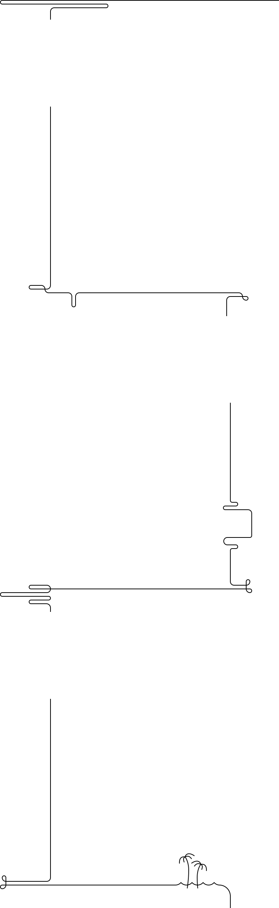
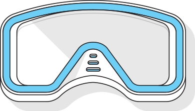
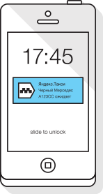
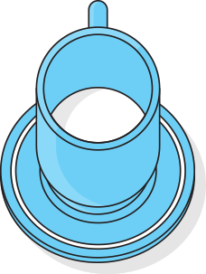
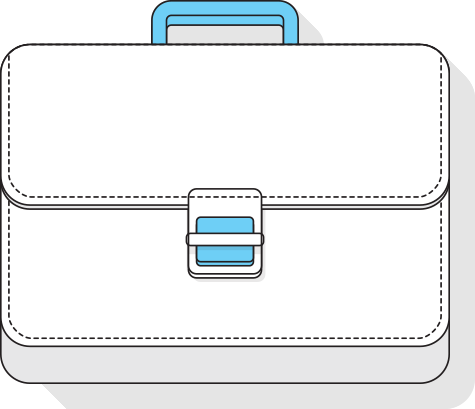
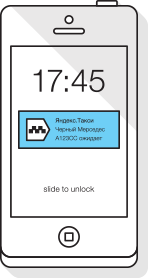
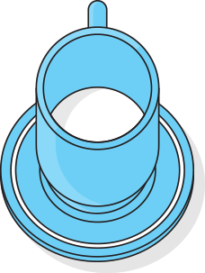
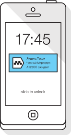
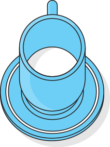

А что если интернет подстроится под меня?
Интернет сегодня — это не только информация
и технологии, это люди:
их желания, предпочтения, задачи. Люди —
вот атомы, из которых на самом
деле состоит цифровая материя; и эти люди
очень, очень разные. Сегодня
поиск умеет подстраиваться, помогая
людям быстрее приходить к тем решениям,
которые им нужны.
Мы представляем Атом: совокупность
инструментов, призванных научить интернет
подстраиваться под разных людей, которые
им нужны.
Весь сайт в одном видео
Максим
Алексей Быков
Георгий И. Дауге
Очень дорожит редкими отпусками и превыше всего ценит комфорт
и качество обслуживания.
Очень дорожит редкими отпусками и превыше всего ценит комфорт
и качество обслуживания.
Очень дорожит редкими отпусками и превыше всего ценит комфорт
и качество обслуживания.

Юра сразу покупает тур: в его ситуации так
очевидно проще. Основные вводные
- приемлемого качества.
Отель центре тайской жизни: чтобы и еда, и
качественный пляж,
достопримечательности, и
рестораны.
Юра носит линзы, и у него как раз
заканчивается
запас - нужно купить новые.
Отель центре тайской жизни: чтобы и еда,
и качественный пляж,
достопримечательности, и
рестораны.



Что Юра точно не хочет упустить, так это
возможность попробовать местную еду.
Каждый вечер они с женой - иногда с детьми,
иногда вдвоем - отправляют в новый
местный ресторан.

Максим
Алексей Быков
Георгий И. Дауге
Интернет сегодня — это не только
информация и технологии, это люди:
их желания,
предпочтения, задачи. Люди — вот атомы,
из которых на самом деле состоит цифровая
материя; и эти люди очень, очень разные.
Теперь посмотрите, как планировали
путешествие в Таиланд Алексей Быков и
Георгий И. Дауге.


 


